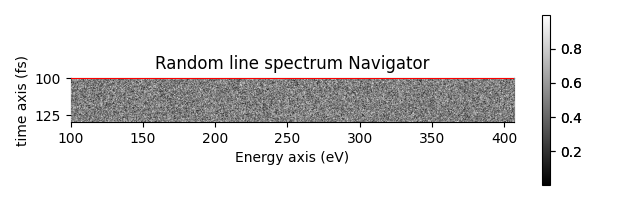
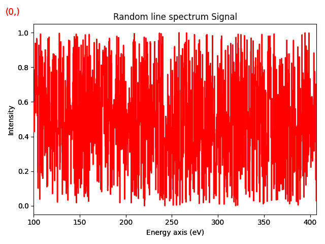

Note
Go to the end to download the full example code
Creates a line spectrum#
This example creates a line spectrum and plots it
- 
- 
import numpy as np
import hyperspy.api as hs
# Create a line spectrum with random data
s = hs.signals.Signal1D(np.random.random((100, 1024)))
# Define the axis properties
s.axes_manager.signal_axes[0].name = 'Energy'
s.axes_manager.signal_axes[0].units = 'eV'
s.axes_manager.signal_axes[0].scale = 0.3
s.axes_manager.signal_axes[0].offset = 100
s.axes_manager.navigation_axes[0].name = 'time'
s.axes_manager.navigation_axes[0].units = 'fs'
s.axes_manager.navigation_axes[0].scale = 0.3
s.axes_manager.navigation_axes[0].offset = 100
# Give a title
s.metadata.General.title = 'Random line spectrum'
# Plot it
s.plot()
Total running time of the script: (0 minutes 0.466 seconds)